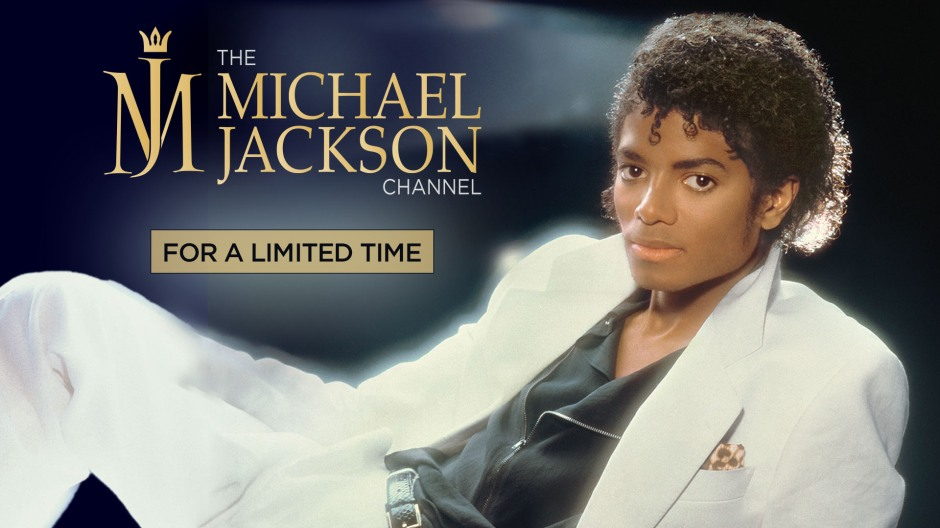

"Slash former guitarist of guns and roses"
"Slash (born Saul Hudson) is a British-American musician and songwriter who is best known as the lead guitarist of the iconic rock band Guns N' Roses. He was born on July 23, 1965, in Hampstead, London, England. Slash's parents were both involved in the entertainment industry, with his mother working as a costume designer for rock bands and his father being a graphic designer for album covers.
Slash's musical career began in the early 1980s when he formed his first band, Tidus Sloan, with childhood friend Steven Adler. In 1985, he joined Guns N' Roses as their lead guitarist, and the band went on to achieve massive success with their debut album "Appetite for Destruction" (1987). Slash's guitar work on songs like "Sweet Child o' Mine" and "November Rain" has become legendary and cemented his status as one of the greatest guitarists of all time.
After leaving Guns N' Roses in 1996, Slash went on to form several other bands, including Slash's Snakepit and Velvet Revolver. He has also released several solo albums and collaborated with many other musicians over the years. In addition to his music career, Slash is also known for his distinctive appearance, with his signature top hat and long curly hair.
Overall, Slash has had a long and successful career in the music industry and has left a lasting impact on the rock genre with his incredible guitar skills and memorable riffs.
Incognito Man: A Guitarist with a KFC bucket. he is known as buckethead
Buckethead is an American musician who is known for his virtuosic guitar playing skills, as well as his unique stage appearance. One of the biggest mysteries surrounding Buckethead is his true identity. Despite his long and successful career, he has managed to keep his real name and personal life a secret from the public.
He is always seen wearing a KFC bucket on his head and a white mask, which adds to the mystique surrounding his persona. Additionally, he is known for his prolific output, having released over 300 albums in a variety of genres, including rock, metal, experimental, and ambient music.
He has collaborated with many notable musicians over the years, including Guns N' Roses, Les Claypool, and Serj Tankian. Despite his enigmatic nature, Buckethead has amassed a dedicated fanbase who appreciate his unique musical style and larger-than-life persona.

Watch: "ORDINARY MAN" by Ozzy Osbourne
Ozzy Osbourne (born John Michael Osbourne) is an English singer, songwriter, and television personality who rose to fame as the lead vocalist of the heavy metal band Black Sabbath. He was born on December 3, 1948, in Birmingham, England.
Osbourne's music career began in the late 1960s when he formed Black Sabbath with guitarist Tony Iommi, bassist Geezer Butler, and drummer Bill Ward. The band quickly gained popularity with their dark and heavy sound, and Osbourne's distinctive vocals became a defining characteristic of their music. After leaving Black Sabbath in 1979, Osbourne embarked on a successful solo career, releasing several hit albums and singles over the years. He is also known for his collaborations with other artists, including his duet with Lita Ford on the song "Close My Eyes Forever."
In addition to his music career, Osbourne has also had a successful career in television. He is best known for his reality show "The Osbournes," which aired from 2002 to 2005 and followed the daily lives of his family. He has also appeared on several other television shows, including "Dancing with the Stars" and "The Masked Singer."
Overall, Ozzy Osbourne has had a long and influential career in the music industry, and his contributions to heavy metal have made him an icon in the genre. Despite facing several personal and health-related challenges over the years, he remains a beloved figure in the rock community and continues to inspire generations of musicians..

Watch: "SMOOTH CRIMINAL" by Michael Jackson
Michael Jackson (1958-2009) was an American singer, songwriter, and dancer. He is often referred to as the "King of Pop" and is one of the most iconic and influential figures in the history of popular music.
Jackson began his career as a child performer in the Jackson 5, a music group composed of him and his four older brothers. He achieved tremendous success as a solo artist, releasing numerous critically acclaimed albums such as "Thriller," "Bad," and "Dangerous." His distinctive voice, innovative dance moves, and memorable music videos contributed to his global fame.
Throughout his career, Jackson received numerous awards and honors, including multiple Grammy Awards and induction into the Rock and Roll Hall of Fame. He is known for his chart-topping hits like "Billie Jean," "Beat It," "Thriller," and "Black or White," among many others.
Apart from his musical achievements, Jackson also made significant contributions to philanthropy. He supported various charitable causes and organized events such as the "We Are the World" charity single and the "Heal the World Foundation."
Michael Jackson's personal life was often a subject of media attention. He faced various controversies and legal challenges throughout his career. In 2009, Jackson passed away at the age of 50, leaving a lasting legacy in the world of music and entertainment. His influence continues to be felt, and his music remains popular and cherished by millions of fans worldwide.